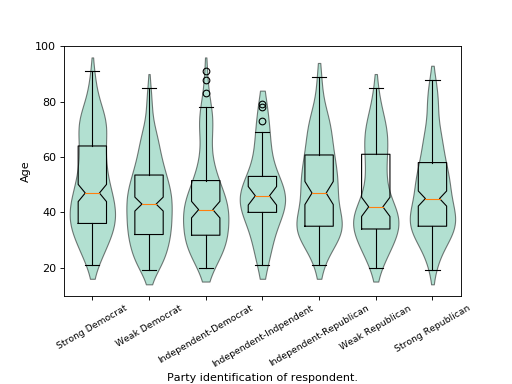

statsmodels.graphics.boxplots.violinplot¶
-
statsmodels.graphics.boxplots.violinplot(data, ax=None, labels=None, positions=None, side='both', show_boxplot=True, plot_opts={})[source]¶ Make a violin plot of each dataset in the data sequence.
A violin plot is a boxplot combined with a kernel density estimate of the probability density function per point.
Parameters: data : sequence of ndarrays
Data arrays, one array per value in positions.
ax : Matplotlib AxesSubplot instance, optional
If given, this subplot is used to plot in instead of a new figure being created.
labels : list of str, optional
Tick labels for the horizontal axis. If not given, integers
1..len(data)are used.positions : array_like, optional
Position array, used as the horizontal axis of the plot. If not given, spacing of the violins will be equidistant.
side : {‘both’, ‘left’, ‘right’}, optional
How to plot the violin. Default is ‘both’. The ‘left’, ‘right’ options can be used to create asymmetric violin plots.
show_boxplot : bool, optional
Whether or not to show normal box plots on top of the violins. Default is True.
plot_opts : dict, optional
A dictionary with plotting options. Any of the following can be provided, if not present in plot_opts the defaults will be used:
- 'violin_fc', MPL color. Fill color for violins. Default is 'y'. - 'violin_ec', MPL color. Edge color for violins. Default is 'k'. - 'violin_lw', scalar. Edge linewidth for violins. Default is 1. - 'violin_alpha', float. Transparancy of violins. Default is 0.5. - 'cutoff', bool. If True, limit violin range to data range. Default is False. - 'cutoff_val', scalar. Where to cut off violins if `cutoff` is True. Default is 1.5 standard deviations. - 'cutoff_type', {'std', 'abs'}. Whether cutoff value is absolute, or in standard deviations. Default is 'std'. - 'violin_width' : float. Relative width of violins. Max available space is 1, default is 0.8. - 'label_fontsize', MPL fontsize. Adjusts fontsize only if given. - 'label_rotation', scalar. Adjusts label rotation only if given. Specify in degrees.Returns: fig : Matplotlib figure instance
If ax is None, the created figure. Otherwise the figure to which ax is connected.
See also
beanplot- Bean plot, builds on violinplot.
matplotlib.pyplot.boxplot- Standard boxplot.
Notes
The appearance of violins can be customized with plot_opts. If customization of boxplot elements is required, set show_boxplot to False and plot it on top of the violins by calling the Matplotlib boxplot function directly. For example:
violinplot(data, ax=ax, show_boxplot=False) ax.boxplot(data, sym='cv', whis=2.5)
It can happen that the axis labels or tick labels fall outside the plot area, especially with rotated labels on the horizontal axis. With Matplotlib 1.1 or higher, this can easily be fixed by calling
ax.tight_layout(). With older Matplotlib one has to useplt.rcorplt.rcParamsto fix this, for example:plt.rc('figure.subplot', bottom=0.25) violinplot(data, ax=ax)
References
J.L. Hintze and R.D. Nelson, “Violin Plots: A Box Plot-Density Trace Synergism”, The American Statistician, Vol. 52, pp.181-84, 1998.
Examples
We use the American National Election Survey 1996 dataset, which has Party Identification of respondents as independent variable and (among other data) age as dependent variable.
>>> data = sm.datasets.anes96.load_pandas() >>> party_ID = np.arange(7) >>> labels = ["Strong Democrat", "Weak Democrat", "Independent-Democrat", ... "Independent-Indpendent", "Independent-Republican", ... "Weak Republican", "Strong Republican"]
Group age by party ID, and create a violin plot with it:
>>> plt.rcParams['figure.subplot.bottom'] = 0.23 # keep labels visible >>> age = [data.exog['age'][data.endog == id] for id in party_ID] >>> fig = plt.figure() >>> ax = fig.add_subplot(111) >>> sm.graphics.violinplot(age, ax=ax, labels=labels, ... plot_opts={'cutoff_val':5, 'cutoff_type':'abs', ... 'label_fontsize':'small', ... 'label_rotation':30}) >>> ax.set_xlabel("Party identification of respondent.") >>> ax.set_ylabel("Age") >>> plt.show()
(Source code, png, hires.png, pdf)

{kind=link}
{kind=link}